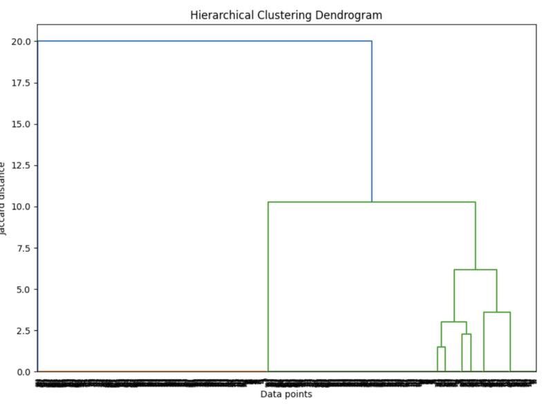
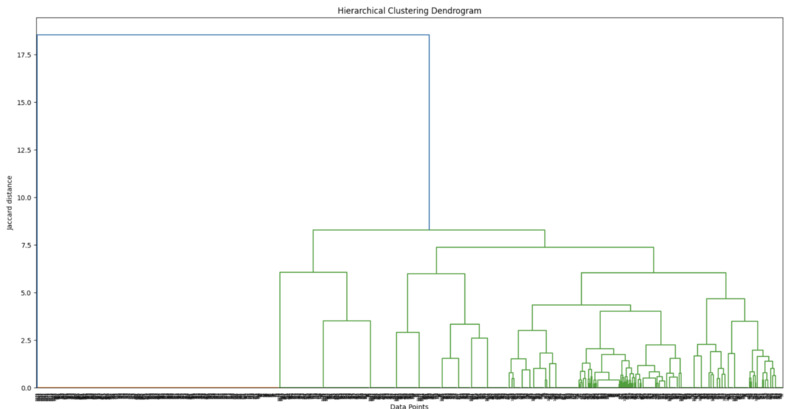
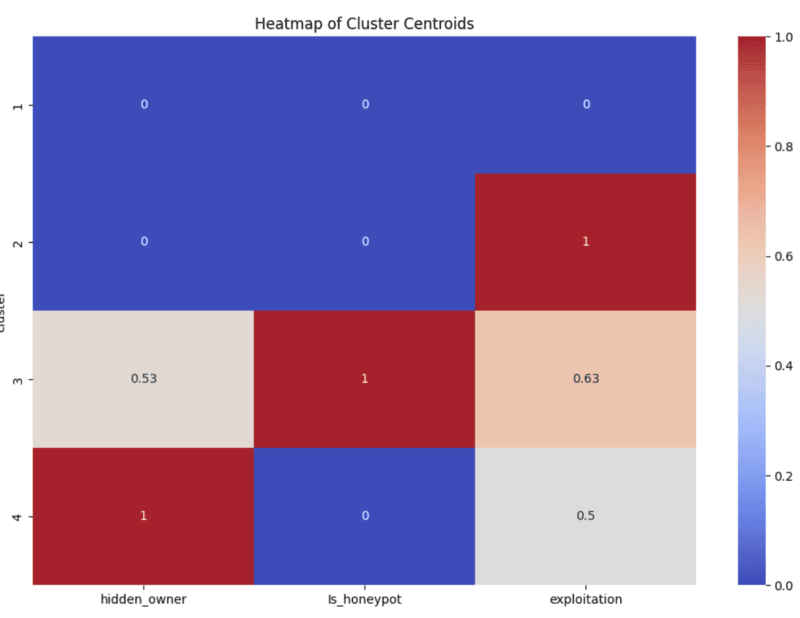
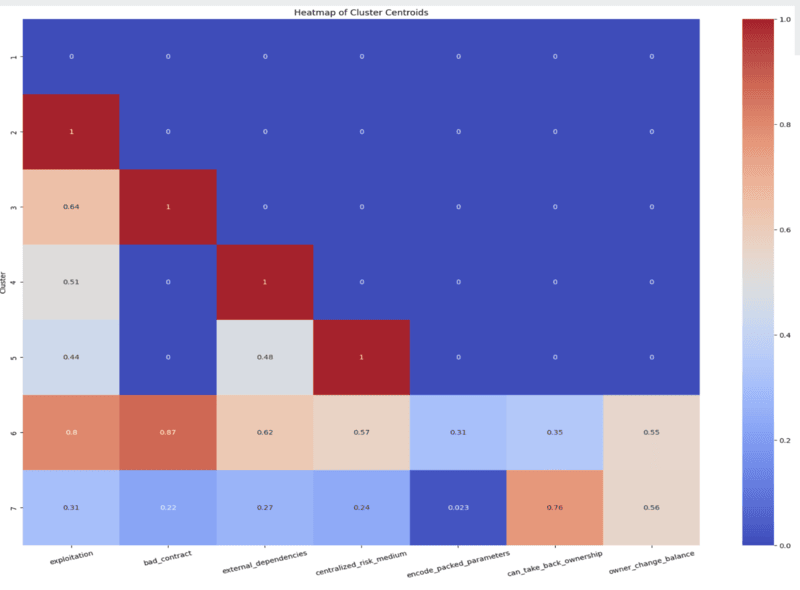

Overview
Objective: Perform analysis and visualization of stock performance using Python and webscraping. The project involves extracting stock data from Yahoo Finance, analyzing the data, and visualizing the stock performance using the pandas, numpy, matplotlib, and seaborn libraries.
Essential Terminology:
1. Smart Contract: A self-executing program stored on the blockchain that automatically carries out an agreement when certain conditions are met without needing a middleman.
- For Example: Let’s say you want to buy a digital artwork. A smart contract can be set up so that as soon as you send the payment, the artwork is automatically transferred to you. No need for a third party like PayPal or a bank.
- Smart contracts' use cases are ever-growing. They can even be used for something as simple as a pair of friends making a bet on which team will win a sports game.
- Why Are They Important?
- No Middlemen: No banks, lawyers, or companies are needed to enforce the contract.
- Transparent: Everyone can see how the contract works (no hidden rules).
- Secure & Immutable: Once written on the blockchain, it can’t be changed or tampered with.
2. Risk Tag: Think of risk tags like warning labels on food—they alert you to potential dangers before you interact with a wallet or contract. These risk tags are provided by Webacy, a security platform that helps protect crypto and NFT assets. There are a total of 32 risk tags, each representing a different type of risk.
- What do they detect?
- Risks of a contract taking your funds through scam, hacks, or fraud.
- Hacking of your tokens.
- Suspicious activity, such as involvement in shady transactions.
- Fake contracts mimicking legitimate ones.
Steps:
Step 1: Import the Necessary Libraries and Load the Dataset
The libraries used in this project are:
- Pandas
- Numpy
- Matplotlib
- Seaborn
- Scipy
The dataset you will be using is a "compiled_risk_dataset". What exactly is in this dataset? This dataset contains 1094 entries of smart contract vulnerabilties. The first 3 columns contain essential information about the smart contract: the project name, the smart contract address, and the chain. The remaining columns are 32 potential risk tags that may be present in any given smart contract. The dataset is essentially a table that lists what specific risks are present in each contract.
Download the dataset and save it into a pandas dataframe. Use the .head() function to print the first five rows and ensure it matches the following:
.png)
Step 2: Perform Feature Selection
Feature selection is the process of selecting the most important variables from your dataset that contribute the most to the predictive power of your model. This helps improve the model’s performance, reduce complexity, and speed up training.
For this project, I selected the following features:
- hidden_owner: Indicates the true owner of the smart contract. Making the owner public ensures transparency between the owner and customer/client.
- Is_honeypot: Type of deceptive contract designed to lure users into sending funds or interacting with it, only to discover that they cannot withdraw or access their funds later.
- exploitation: Where vulnerabilities or flaws in a smart contract are taken advantage of by malicious actors to perform actions that were not intended by the contract's creators. These include unauthorized access, stealing funds, altering contract behavior, or manipulating data.
I chose these 3 risk tags since they encompass broad, yet important, domains of security in smart contracts.
Use the following code to convert True/False values into binary form:
selected_features = data_new[[feature_1, feature_2, feature_3]].replace({True: 1, False: 0})Step 3: Compute the Jaccard Distance
The Jaccard Distance is a metric used to compare the similarity and diversity of two sets. In cluster analysis, Jaccard distance is a useful measure when you are working with data that can be represented as sets or binary attributes. It helps in determining the dissimilarity between data points.
Use the following code to compute it:
from scipy.spatial.distance import pdist, squareformdistance_matrix = pdist(selected_features, 'jaccard')distance_square_matrix = squareform(distance_matrix)Step 4: Perform Clustering
Cluster analysis is a way to group things that are similar to each other. It is a form of unsupervised machine learning. Imagine you have a collection of items, and you want to sort them into groups based on their characteristics. Cluster analysis helps you automatically find these groups, or clusters, without needing to tell the computer exactly what the groups are in advance.
Use the following code to perform clustering:
import scipy.cluster.hierarchy as schlinkage_matrix = sch.linkage(distance_matrix, method='ward')Step 5: Plot a Dendrogram
Now it is time to visualize our analysis. Use the following code to plot the dendogram:
plt.figure(figsize=(10, 7))dendrogram = sch.dendrogram(linkage_matrix)plt.title('Hierarchical Clustering Dendrogram')plt.xlabel('Data points')plt.ylabel('Jaccard distance')plt.show()If you selected the same features as I did, the dendrogram will look like this:
However, if you selected different features or less/more than 3 features, your dendogram can look very different.
For example, as an experiment I went back and changed the feature selection on my analysis. Not only did I select completely different features, but I went from 3 features to 7.
The features I selected were:
- exploitation
- bad_contract
- external_dependencies
- centralized_risk_medium
- encode_packed_parameters
- can_take_back_ownership
- owner_change_balance
The outcome of this dendogram is as shown below:
What does the dendrogram show us?
A Dendogram is a tree-like diagram that shows the hierarchical relationships between data points. It visually represents how clusters are merged or split based on similarity or distance. The vertical axis typically shows the level of similarity (or distance) between clusters, while the horizontal axis represents the individual data points or clusters. The branches merge as the clusters become more similar, with shorter branches indicating higher similarity. By analyzing the dendrogram, you can determine the optimal number of clusters and see which items are closely related based on their features.
We can learn a lot from the denogram, but lets use a different form of visualization that maybe more helpful.
Step 6: Plot a Heat Map
Additionally, you can create a heat map as an alternative way to visualize the analysis. Use the following code to plot the heatmap:
cluster_centers = data_new[[feature_1, feature_2, feature_3, 'cluster']].groupby('cluster').mean()plt.figure(figsize=(12, 8))sns.heatmap(cluster_centers, annot=True, cmap='coolwarm')plt.title('Heatmap of Cluster Centroids')plt.show()The heatmap for the original feature selection will look like this:
The heatmap for the second features selection I perfomed will look like this:
The more warm (red) a sect in the heatmap is, the more of that particular risk tag is present. For example, in the second heatmap we can see that in cluster 6, 57% of the contracts have the centralized_risk_medium tag. Whereas in clusters 1-4, we can see the centralized_risk_medium tag is not present in any of them.
What does the heatmap show us?
The risk level of each cluster grows from 1 through 7; 1 being the least risky.
What are some more detailed insights we can take away?
- Contracts in cluster 1 possess negligible or no vulnerabilities.
- The can_take_back_ownership tag is particularly strong in cluster 7.
- Exploitation is particularly strong in clusters 2 and 6, therefore must focus on minimizing their vulnerabilities from potential loss of funds.
- Contracts in clusters 4 and 5 must focus most on decreasing their dependence on external systems and/or contracts.
- Contracts in clusters 6 and 7 need to be deeply reevaluated from top to bottom as they contain risks in all 7 selected features.
- Contracts in cluster 6 are the most vulnerable for potential loss of funds out of all 7 clusters.